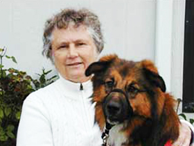

History
Prison Pet Partnership, operating within Washington State criminal justice system, has been a model for the nation in the rehabilitation of offenders. It began in 1981 as the result of a collaborative effort between Sister Pauline, a Dominican nun, and the late Dr. Leo Bustad, former chair of Washington State University’s veterinary program, who believed that inmate rehabilitation could be facilitated by the human-animal bond. Sister Pauline and Bustad worked cooperatively with Washington State University, Tacoma Community College, and the Washington State Department of Corrections to create this innovative program within the Washington Corrections Center for Women (WCCW).
Prison Pet Partnership now helps inmates at WCCW learn to train, groom and board dogs from within the prison walls. Since its inception, the program has placed over 700 dogs in the Pacific Northwest as Service, Seizure, Therapy Dogs, and in families as Paroled Pets.
In 1986, Prison Pet Partnership was one of the top ten finalists for Innovations in State and Local Government recognized by the Ford Foundation and the John F. Kennedy School of Business at Harvard University.
In 1997, General H. Norman Schwarzkopf came to Prison Pet Partnership to host “What’s Right in America” for NBC. He felt that our program exemplified how the prison system can aid in the rehabilitation of inmates while serving the community at large.